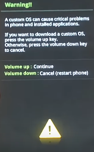

Realizar root 100% funcional para o Galaxy ON7 G600FY e instalar recovery customizada TWRP

Acabou de por as mãos em um novo aparelho e não vê o momento de liberta-lo desse mundo sem cor e sem acessibilidade? Quer remove-lo das garras da Samsung e dar-lhe o total acesso de customiza-lo ao seu modo? pois é meus queridos, para que isso seja possivel o passo fundamental é realizar root, ele é a porta de entrada para o mundo das customizações e acessos que o usuário comum não tem. então vamos ao que intereça e deixar de enrolação.
Para esse tutorial você irá precisar:
Após ter baixado os arquivos listados acima instale os Drives USB da Samsung e extraia o arquivo 'Odin3-v1.85_2_www.soinroms.com.rar' e o 'Twrp.rar'.
-
Para darmos inicio vamos ativar o modo desenvolvedor. Com o aparelho em mãos vá em Configurações > Sobre e Info. Software, nesta seção clique 7 vezes em 'Número de compilação'.
Volte as configurações e clique em "Opções do desenvolvedor", agora ative as seguintes funções: "Depuração por USB" e o "Desbloqueio por OEM".
Feito o passo anterior conecte o aparelho ao pc e aguarde que os drivers do mesmo sejam instalados.
No pc vá na pasta em que foi realizado o download dos arquivos e transfira o arquivo "SuperSu.zip" para a memória interna do aparelho.
Remova o cabo USB e desligue o aparelho.
Vamos por o Galaxy ON7 em modo Download, para isso pressione ao mesmo tempo as teclas de "VOL -", "HOME" e "POWER" por alguns segundos, ao aparecer uma nova tela pressione a tecla de "VOL +" para confirmar.
Instalar Recovery Customizada

Conecte o aparelho ao pc e abra o Odin, clique em PDA e escolha o arquivo TWRP_3.0.2-1_SM-G600FY_141016_www.soinroms.com.tar" que se encontra no diretório de 'Downloads', feito isso clique em 'START'.
Quando a instalação da recovery terminar o dispositivo irá reiniciar então aguarde.
Após o aparelho ligar, desligue-o. Com o ON7 desligado vamos entrar na recovery Customizada então pressione ao mesmo tempo as teclas de "VOL +", "HOME" e "POWER" por alguns segundos.
Assim que entrar na custom reovery iremos instalar o arquivo 'SuperSU'.
-
Instalar Root

Clique em Instalar, desça até o fim dos arquivos e selecione o arquivo 'SR1-SuperSU-v2.78_www.soinroms.com.zip' que passamos para a memória interna a passos anteriores. Para instalar "Deslize para confirmar flash" e aguarde.
Após uns 30 a 40 segundos mais ou menos clique em "Reiniciar". Com isso o Samsung Galaxy ON7 G600FY já estará com acesso de super usuário, root e recovery customizada para fazeres as alterações que lhe forem mais pertinentes, então use o root com moderação.
Então se obteve problemas com alguns dos passos listados acima, fique tranquilo a deixar os seus comentários logo abaixo.